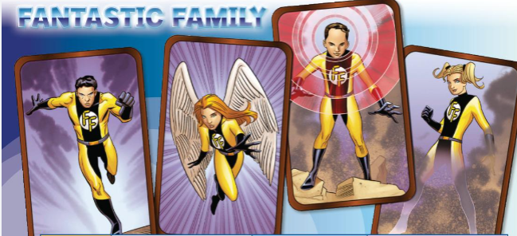

Lesson 1: Fantastic Family
Lesson Overview
Content: talking about a family of 4 with super powers to save the world.
In this lesson, you are going to learn various words to describe super powers in English. You will also practice using these words in sentences.

Vocabulary List
- 🔊: Special powers /ˈspeʃəl ˈpaʊərz/ — Noun: abilities that normal people do not have
- 🔊: Brave /breɪv/ — Adjective: not afraid of danger
- 🔊: Invisible /ɪnˈvɪzəbəl/ — Adjective: cannot be seen
- 🔊: Control minds /kənˈtroʊl maɪndz/ — Verb phrase: to control what others think or do
- 🔊: Intelligent /ɪnˈtelɪdʒənt/ — Adjective: very smart
- 🔊: Villains /ˈvɪlənz/ — Noun: bad people or characters
- 🔊: Secret identity /ˈsiːkrət aɪˈdentəti/ — Noun: a hidden real identity
Example Sentences
- The family has special powers to help people in need.
- The father is very brave and always protects his family.
- The mother can become invisible to sneak past villains.
- The son can control minds to stop bad guys from causing trouble.
- The daughter is very intelligent and solves problems quickly.
Practice Exercises
1. Complete the words based on the meanings provided:
| Meaning | Complete the word | Feedback |
|---|---|---|
| Not afraid of danger | ||
| Cannot be seen | ||
| Bad people or characters | ||
| Very smart | ||
| A hidden real identity |
2. Fill in the blanks in the sentences using the vocabulary words:
1. The superhero's
(singular) allows her to sneak into places without being noticed.
2. The
always come up with evil plans to defeat the heroes.
3. He is very
and can solve complex problems easily.
4. The hero has a
to protect his loved ones from danger.
5. It takes a lot of courage to be
in dangerous situations.